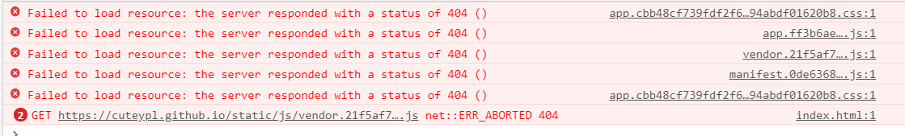
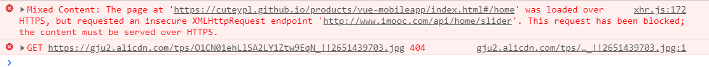
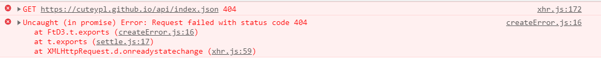

加载资源的路径问题，导致不能正确加载到数据进行渲染
文件路径问题：config/index.js，build下的assetsPublicPath:'/'改为'./'，即绝对路径改为相对路径；
build: {
...
assetsSubDirectory: 'static',
assetsPublicPath: './',
...
}
背景图片问题：build/utils.js，在如下位置添加一行，publicPath:'../../'；
if (options.extract) {
return ExtractTextPlugin.extract({
...
publicPath: '../../'
})
项目打包后dist文件夹下的index.html引入文件没有引号，解决办法：找到build下的webpack.pro.conf.js的new HtmlWebpackPlugin的minify的removeAttributeQuotes:true改为false
new HtmlWebpackPlugin({
...
minify: {
...
removeAttributeQuotes: false
}
上传时，将dist下的文件及文件夹上传即可，index和static同处一个目录下；
Tips-查阅的文档，可参考。

我的博客地址是：https://cuteypl.github.io
项目展示地址是：https://cuteypl.github.io/xxx/index.html
注意到这里面采用的是https协议 但在项目里面，引用的百度地图api是http的链接
HTTPS页面里动态的引入HTTP资源，比如引入一个js文件，会被直接block掉的
在HTTPS页面里通过AJAX的方式请求HTTP资源，也会被直接block掉的。
我采用的解决方法是，在index.html页面的head添加
<meta http-equiv="Content-Security-Policy" content="upgrade-insecure-requests">
添加这个标签，可以使页面上的http请求自动转为https请求
Tips-查阅参考的文档-传送门1 传送门2 传送门3 传送门4

看截图，是路径问题
方法1：将项目中的所请求的api数据，放到报错提示的路径下去
在我的这个项目所请求的数据是原先在开发环境下配置的static文件下的mock文件下的json数据
后面项目打包时，已将数据打包到了dist/static/mock下 根据上面的报错截图，可将这些json数据直接放置在cuteypl.github.io根目录下新建的api文件夹下 依此类推，您可根据自己的项目情况来修改，不一定是我这样的，但解决的方法是相通的 方法2：修改发送请求的路径
我这里是通过修改Home.vue下的Home.vue/Detail.vue/Location.vue中使用axios请求数据的url
将axios.get("/api/index.json") 改成 axios.get("./api/index.json")，使用相对路经
这样在请求api时，就会请求当前index页面的相对路经下的api文件夹里的数据 部署项目时，将包含json数据的api文件夹放置在同index.html的目录下即可
Tips-查阅参考的文档-传送门
路经问题
// html
<link rel="icon" href="./static/images/favicon.ico" type="image/x-icon">
// webpackage.dev.conf.js
new HtmlWebpackPlugin({
...
favicon: path.resolve('./static/images/favicon.ico'), // 引入图片地址
...
}
// webpackage.prod.conf.js
new HtmlWebpackPlugin({
...
favicon: path.resolve('./static/images/favicon.ico'), // 引入图片地址
...
}
Tips：这里将图片放置在static下，若放置在src/assets，项目打包时，会找不到图片
Tips：也许会有更好的解决办法，待发掘和实践
Tips：vue中的static和assets的区别 参考文档-传送门